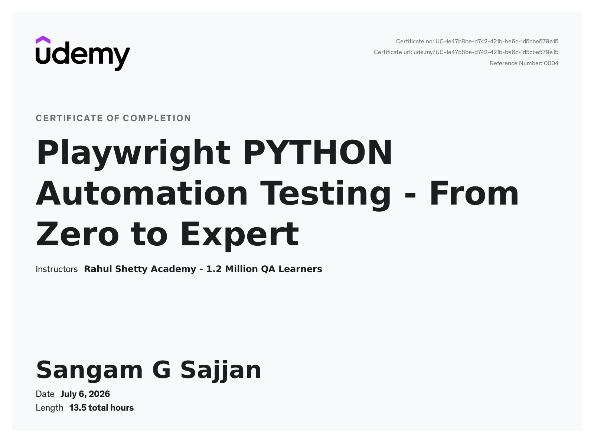
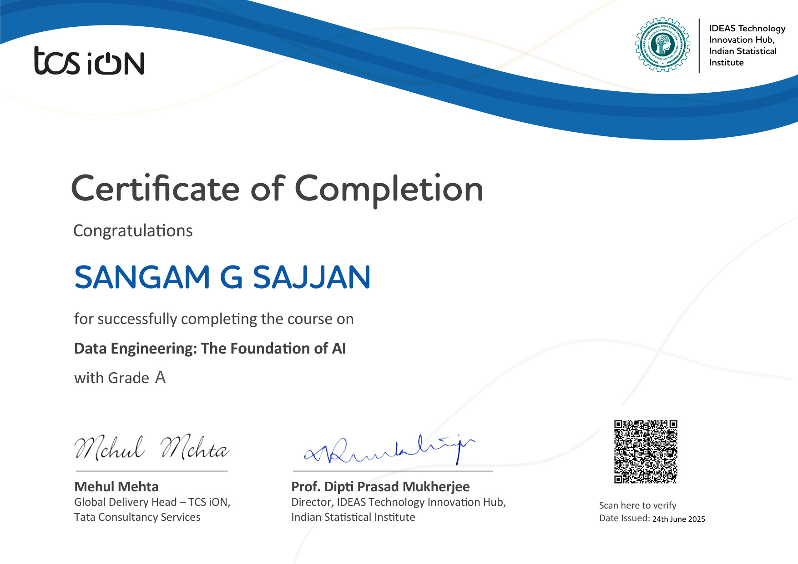
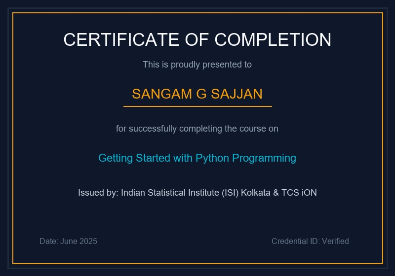
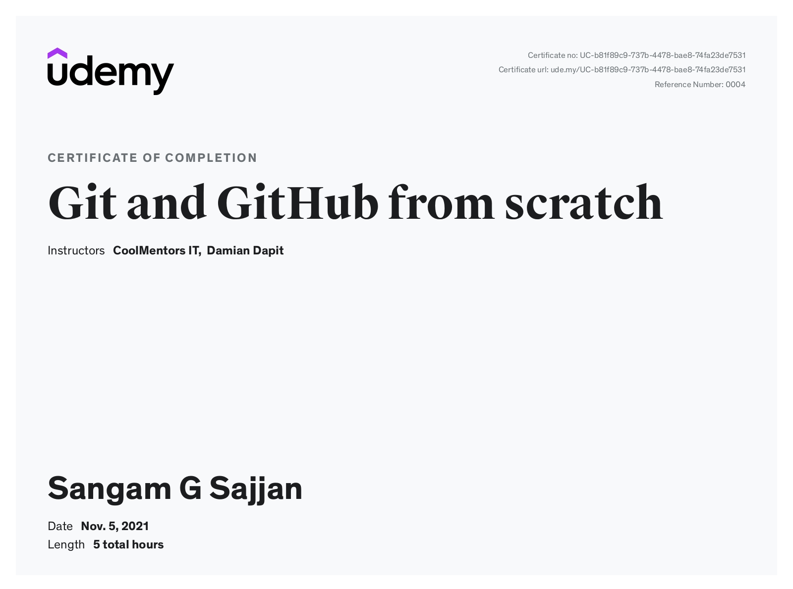
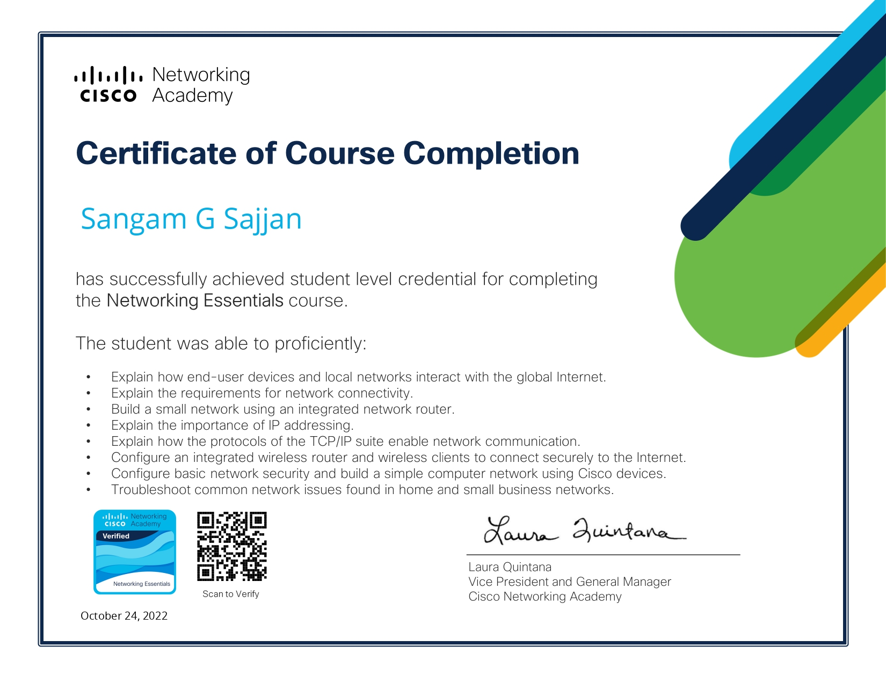
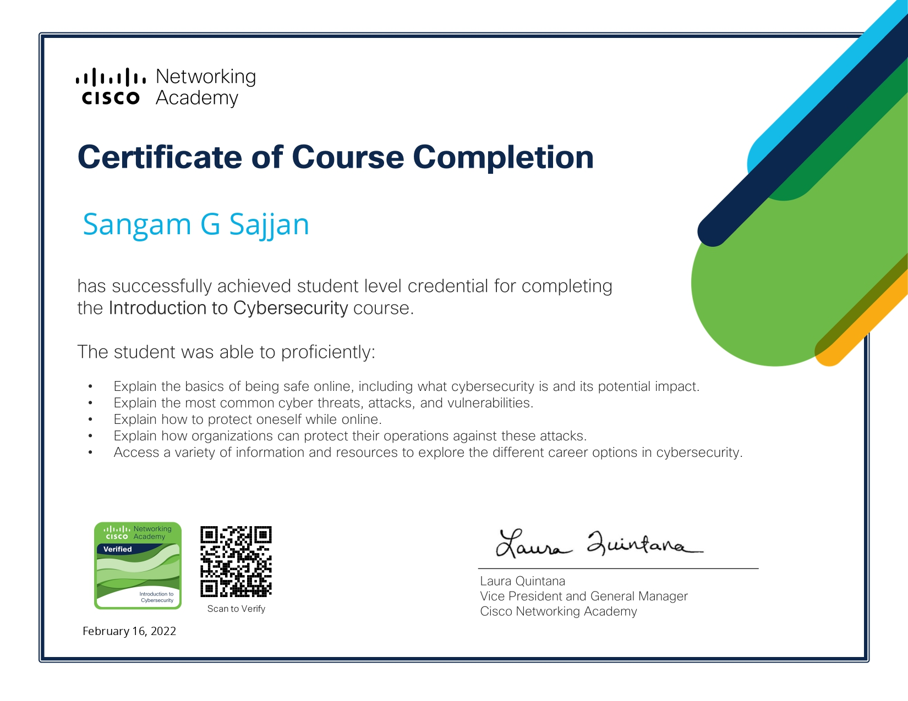
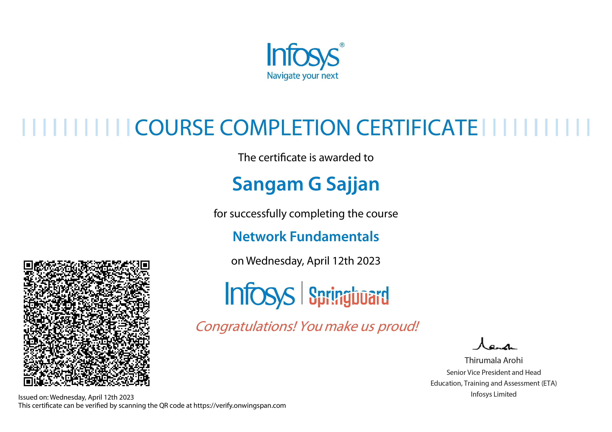
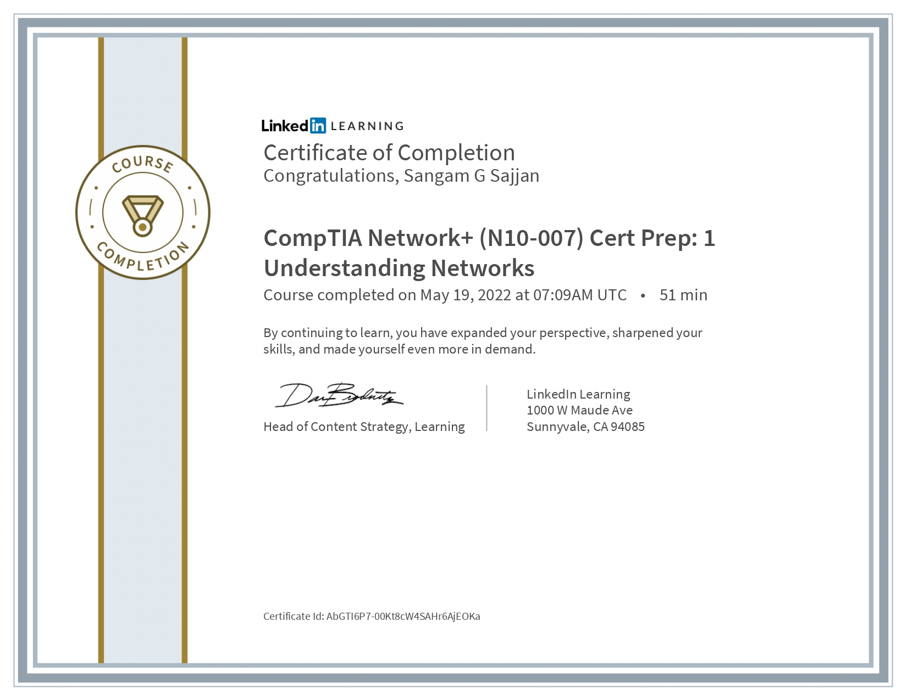

QA Automation & Data Quality Engineer
QA Automation & Data Quality Engineer with 2 years of hands-on experience designing and deploying scalable automated testing frameworks using Python, Playwright, and SQL. I accelerate release velocity, reduce regression execution times by 75%, and integrate parallel test suites directly into CI/CD pipelines.
I am a QA Automation & Data Quality Engineer with over 2 years of hands-on experience designing and deploying scalable automated testing frameworks using Python, Playwright, and SQL. I thrive in Agile/Scrum environments where I can build parallel test suites and integrate them directly into CI/CD deployment pipelines.
My true passion lies in delivering reliable, maintainable automation that not only accelerates releases but also validates backend data integrity and REST APIs. By combining software quality assurance rigor with advanced API testing and database validation, I help engineering teams deliver flawless enterprise software.
Playwright, Pytest, Page Object Model (POM)
Python, SQL, MySQL
REST API Testing, Postman, Playwright API Testing, JSON Schema
JIRA, Git, GitHub Actions, Docker, AWS, Browser Dev Tools
GitHub Copilot, OpenAI API, Prompt Engineering
STLC, SDLC, Functional, Smoke, Sanity, Regression, UI, Cross-Browser, Responsive, Exploratory, Boundary Value Analysis

Comprehensive automation training covering Playwright framework with Python, Pytest, POM, API testing, and CI/CD integration.

Certified Grade A program covering core data engineering principles, relational databases, data pipelines, and AI foundation structures.

Foundation in Python programming, control flows, data structures, scripting algorithms, and procedural programming paradigms.

Mastering version control, branching strategies, collaboration, pull requests, and repository management.

Foundational concepts of network configuration, TCP/IP suite communication, security basics, and routing protocols.

Understanding common cyber threats, vulnerabilities, protective measures, and business data security practices.

Core networking concepts, protocols, IP addressing schema, and network administration basics.

Preparation covering core networking components, topologies, physical connections, and essential network devices.
A modular, scalable Page Object Model UI framework designed to cover E2E browser automation across multiple web engines.
Data-driven API testing utility and database verification engine to guarantee full data integrity of API responses.